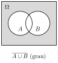
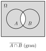
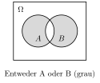

Aufgabe 2.4
Die Ereignisse $A$ und $B$ sind gegeben.
- Was drückt das zusammengesetzte Ereignis $\overline{A \cup B}$ sprachlich aus? Finden Sie einen äquivalenten mengenalgebraischen Ausdruck.
- Was drückt das zusammengesetzte Ereignis $\overline{A \cap B}$ sprachlich aus? Finden Sie auch dazu einen äquivalenten mengenalgebraischen Ausdruck. [Hinweis: Das Aufteilen des «Negationsbalkens» in $\overline{A \cup B}$ und $\overline{A \cap B}$ ist als De Morgansche Regel bekannt.]
- Beschreiben Sie das zusammengesetzte Ereignis ``Entweder A oder B'' mengenalgebraisch.
- Zeichnen Sie ein Venn-Diagramm mit den Ereignissen A und B
- $\overline{X}$ bedeutet «nicht X» - welcher Bereich im Diagramm ist das?
- Bei $A \cup B$: Dies ist der gesamte Bereich von A oder B (inklusives Oder!)
- Bei «Entweder A oder B»: Dies ist exklusives Oder - A oder B, aber nicht beide
Teil (a): $\overline{A \cup B}$ - «Weder A noch B»

«Es ist nicht der Fall, dass A oder B eintritt.»
= «Weder A noch B treten ein.»
Herleitung:
$\omega \in \overline{A \cup B}$ genau dann, wenn:
- $\omega \notin A \cup B$
- $\omega \notin A$ UND $\omega \notin B$
- $\omega \in \overline{A}$ UND $\omega \in \overline{B}$
De Morgansche Regel 1: $$\boxed{\overline{A \cup B} = \overline{A} \cap \overline{B}}$$
Teil (b): $\overline{A \cap B}$ - «Nicht beide»

«Es ist nicht der Fall, dass A und B beide eintreten.»
= «Mindestens eines tritt nicht ein.»
Herleitung:
$\omega \in \overline{A \cap B}$ genau dann, wenn:
- $\omega \notin A \cap B$
- Nicht ($\omega \in A$ UND $\omega \in B$)
- $\omega \notin A$ ODER $\omega \notin B$
- $\omega \in \overline{A} \cup \overline{B}$
De Morgansche Regel 2: $$\boxed{\overline{A \cap B} = \overline{A} \cup \overline{B}}$$
Teil (c): «Entweder A oder B» (Exklusives Oder)

``A tritt ein, aber B nicht, ODER
B tritt ein, aber A nicht''
(NICHT beide gleichzeitig!)
Mengenalgebraische Darstellung:
- Fall 1: A tritt ein, B nicht: $A \cap \overline{B}$
- Fall 2: B tritt ein, A nicht: $\overline{A} \cap B$
Formel: $$\boxed{\text{«Entweder A oder B»} = (A \cap \overline{B}) \cup (\overline{A} \cap B)}$$
Alternative: Symmetrische Differenz $$A \triangle B = (A \setminus B) \cup (B \setminus A)$$